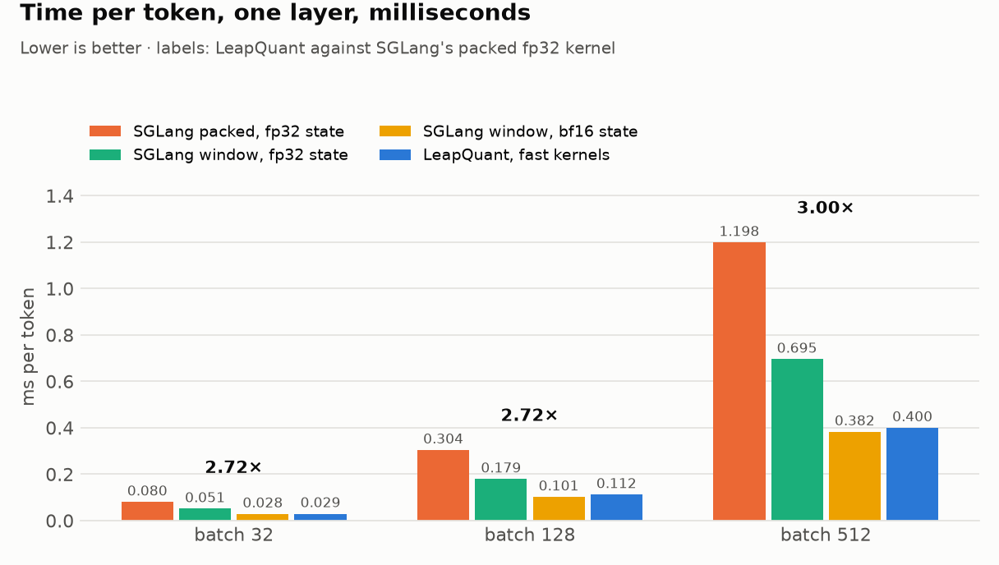

Kernel time per decode step
One decode token for every request of the batch, for one linear-attention layer, on one GPU. LeapQuant next to the two kernels SGLang ships.
Fast kernels (Triton, tensor cores): time per token
Decode step plus one sixteenth of a fold (the window folds every 16 tokens). Every kernel timed the same way: ten calls captured in a CUDA graph, the median of 20 replays, so no host launch time is counted. Source: e_triton_speed*.txt (kernel/bench_triton.py --with-sglang).

| Batch | LeapQuant | decode step | fold (every 16) | SGLang packed fp32 | SGLang window fp32 | SGLang window bf16 | SGLang packed bf16 | LeapQuant exact kernels | vs packed fp32 | vs window fp32 | vs window bf16 |
|---|---|---|---|---|---|---|---|---|---|---|---|
| 32 | 0.0293 | 0.0193 | 0.160 | 0.0798 | 0.0509 | 0.0284 | 0.0244 | 0.1036 | 2.72× | 1.74× | 0.97× |
| 128 | 0.1117 | 0.0754 | 0.581 | 0.3039 | 0.1790 | 0.1014 | 0.1570 | 0.4207 | 2.72× | 1.60× | 0.91× |
| 512 | 0.3997 | 0.2524 | 2.356 | 1.1980 | 0.6951 | 0.3821 | 0.6112 | 1.6278 | 3.00× | 1.74× | 0.96× |
Above 1× LeapQuant is faster, below 1× slower. The paper reports 2.52× against fp32 for this configuration.
Generated 2026-11-13 20:04 from results/run-quick-einstein-v6 by reports/generate_reports.py. All reports.